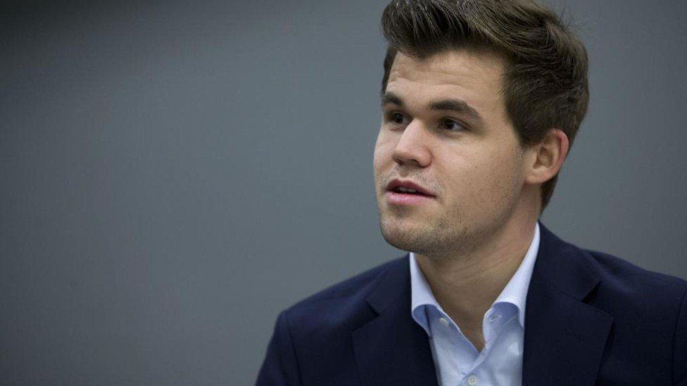

Магнус Карлсен - действующий чемпион мира по шахмтам.
Магнус Карлсен родился в 1990 году. Научился играть в шахматы в возрасте 5 лет.
По признанию Магнуса, одной из первых причин, почему ему хотелось научиться хорошо играть, это было желание обыгрывать сестру и отца. Его отец неплохо играет в шахматы на уровне 1-го разряда.
В 12 лет юный норвежец становится международным мастером, в 13 лет — гроссмейстером!
Возможно, ключевым моментом в решающем рывке на шахматный Олимп стали тренировки норвежца у самого Гарри Каспарова в 2009 году.